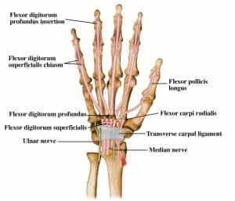
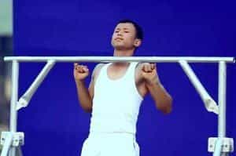
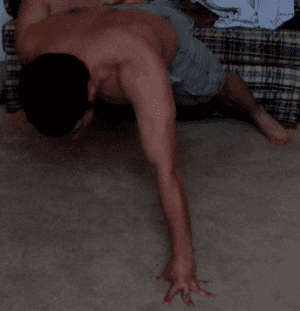

< < < Back
One Simple Trick To Help Your Calisthenic Workouts – Return Of Kings
Everyone (which is to say, everybody that isn’t a complete novice) knows that weight training is something done in small incremental increases over a period of time. You start off with low weights, and gradually work up to higher and higher weights. That’s pretty obvious.
What isn’t as obvious is that calisthenics have their own version of this, a tactic so fundamental to advanced calisthenics that it was alluded to multiple times in my Convict Conditioning series of articles, but never explicitly delineated. A tactic that I have dubbed declining calisthenic loads.
What Is It?
Essentially, where weightlifting requires you to add small increments of weight in units of 5 or 10, calisthenic unloading requires you to decrease the weight born on your limbs as you do moves such as the one handed pushup or one-handed pullup.

An old reliable picture of yours truly
While you will find variations of this in all sorts of calisthenic and gymnastic training regimens, I am not aware of anybody giving a proper name to it. Thus I take full credit for being the first to do so.
How does it work?
It depends on the exercise that is being used at the moment, but each of method of declining loads involves gradually removing a limb from labor (note: do not LITERALLY remove your limb, idiot). And as luck would have it, the human body already comes sub-divided (to borrow a musical term) into smaller and smaller units that can be gradually removed, forcing the remaining units to work harder. Those units are of course the phalanges-the fingers and toes-and the various other tarsal and carpal bones that can be nullified in the midst of calisthenic exercise.

Those who have read Convict Conditioning are likely aware of this concept already—indeed, Paul Wade’s discussion of “hand and a half” pushups or “basketball squats” are the fundamentals of this idea, removing the entire hand or foot from the equation and forcing the other podial to labor twice as hard.
But just as musicians will repeatedly subdivide a bar of music to get the proper count and rhythm, and barbell manufacturers produce 1.25 pound plates, you too can subdivide calisthenic exercise—by using musicians will repeatedly subdivide a bar of music to get the proper count and rhythm, and barbell manufacturers produce 1.25 pound plates, you too can subdivide calisthenic exercise—by using your fingers.
Take, for example, the one-handed pull-up: A very difficult exercise indeed, and one that probably provided me with the most difficulty in the convict conditioning curriculum. A way of working up to the true one-handed pull-up that I discovered was to hang with the fingers of one hand.

Beginning with removing the thumb (the strongest digit), you hang with the four remaining fingers, and then do pull-ups with that. And from there you release the pinky finger and do pull-ups. Then remove the ring finger, and so forth until you are using solely the two strongest fingers beyond the thumb, the index and middle finger. Once you’ve successfully done this, you can do pull-ups with just the index finger. And then move onto the other fingers.
The effectiveness of this method is that you can combine fingers based on your level of strength: Knowing that the index and middle fingers are the strongest, should you be struggling to use only the middle finger, you can use the middle and ring or middle and pinky finger as a stop gap.
Similarly, you can utilize any other combination until you are doing pull-ups with just the pinky finger (combined with a fully utilized opposite hand of course). And once you’ve mastered that, the actual one-handed pull-up cannot be too far behind.
If you are struggling with the one handed pushup, you will of course use the “hand and a half basketball” method. And if you can’t cross that gap into the true one-handed pushup…you guessed it, you use the finger method!
Personally speaking, I found that once I had gotten down to using one index finger on the ball, I was ready to do the one-handed pushup. And it is likely many of you won’t even need to do this.
However, where I found this method to be the most useful was in the one-handed fingertip pushup

Gradually removing fingers from the opposite hand into the true finger-tip pushup (With the aid of the medicine ball/basketball) was probably the most useful technique I used in achieving the true one-handed fingertip pushup.
Undoubtedly one could use this for even more calisthenic techniques such as the handstand pushup…but I will admit I have yet to achieve the two handed fingertip handstand pushup, to say nothing of the nigh-mythical single-armed variant.
Regardless of my failure to perform a skill that most people couldn’t imagine…I have still given you the tools to achieve slightly more believable bodyweight skills, in this and past articles. Go forth and use them.
Read More: Two Do-It-Yourself Methods For Training Your Forearms